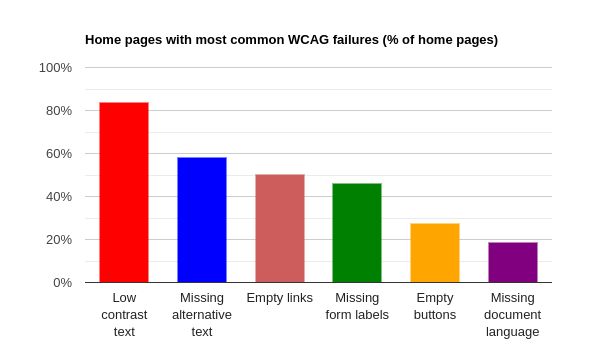

Out of all those errors, 96% fall into one of the following 6 categories:
ALL of these top errors are easily fixable, but are often simply overlooked by devs.
Want the opportunity to provide feedback on accessiblity directly to developers working on the websites of tomorrow?
Sign up today!
Feel free to explore the site to learn more about accessibility issues on the web, or to provide feedback on your first project
Issues such as low contrast text and colors hard to distinguish for those with colorblindness make accessing large parts of the web impossible for many users. While this issue may seem insignificant, sources estimate that sites with these issues lose approximately 7 billion dollars in potential revenue annually.Nucleus Research
This number shows just how many people benefit from technologies such as screen readers. While making sites compatible with screen readers seems complicated, as a matter of fact it is often as simple as adding a single phrase to each piece of media on a site. Microsoft
Similarly how one can sue for missing physical accomdations, you can also sue over missing web accessiblity accomodations. While companies may try to convince you that this is an extreme option, laws such as the ADA require them to make reasonable accomodations for all users. Accessibility.com
"Review"
"Review"
"Review"
This is the best app description you've ever seen